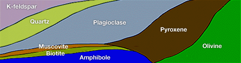

생성원리

개요
화성암이란 요약하면 마그마가 식어 굳어진 암석을 말합니다.
지하심부의 마그마가 유입되어 위로 융기하면 주위의 낮은 온도에 의해 식게 됩니다.
이 과정에서 마그마는 고체화 되는데 이를 결정화 작용 과정이라 합니다.마그마는 다양한 화학성분을 가지고 있기 때문에 물과 같이 특정온도(0℃ )에서 결정화가 진행되지 못하고 단계적, 순차적으로 결정화가 이루어 집니다.화성암은 생성환경에 따라 크게 분출암과 관입암으로 나뉘며 관입압은 반심성암과 심성암으로 분류됩니다. 분출암은 곧 화산암과 같은 의미이기 때문에 화성암은 일반적으로 화산암, 반심성암, 심성암으로 나눌 수 있습니다.
화성암의 분류는 크게 조직, 화학조성, 광물구성에 따라 이루어집니다.
조직은 일반적으로 결정이 큰 순으로 조(완)립질, 반정질, 세립질(비현정질), 유리질(비결정질)로, 화학조성은 SiO2의 함량에 따라 산성, 중성, 염기성, 초염기성암으로, 광물구성은 지구상의 주요광물의 함량에 따라 규장질, 중간질, 고철질, 초고철질로 각각 나눕니다.
조직은 생성과정과 깊이에 직접적인 연관이 있으며, 화학조성과 광물구성은 분류되는 단계가 흡사하며, 암석의 색과 관련이 큽니다.
이 화성암의 기준들을 종합적으로 분류하면 다음과 같습니다.
|
화학적분류 조직적분류 |
SiO2 | 산성암 | 중성암 | 염기성암 | 초염기성암 | |
|---|---|---|---|---|---|---|
| ← 66%52%45% → | ||||||
| 조암광물 함량 | 규장질암 | 중성질암 | 고철질암 | 초고철질암 | ||
| 조직 | 냉각속도 |
색 생성 |
← 밝음어두움 → | |||
| 미정질, 비현정질 (세립질) |
빠름 | 지표 및 얕은 천부 |
유문암 | 조면암, 석영안산암, 안산암 | 현무암 | Komatiite |
| 반상(중립질) | 중간 | 중간 | 석영반암 | 섬장반암, 화강섬록반암, 섬록반암 | 휘록암, 조립현무암 | |
| 완정질(조립질) | 느림 | 깊은 심부 | 화강암 | 섬장암, 화강섬록암, 섬록암 | 반려암 | 감람암, dunite |
| 화성암 내 주요 조암광물 분포 |
K-feldspar:K-장석 Quartz:석영 Plagioclase:사장석 Muscovite:백운모 Biotite:흑운모 Amphibole:각섬석 Pyroxene:휘석 Olivine:감람석 |
 | ||||